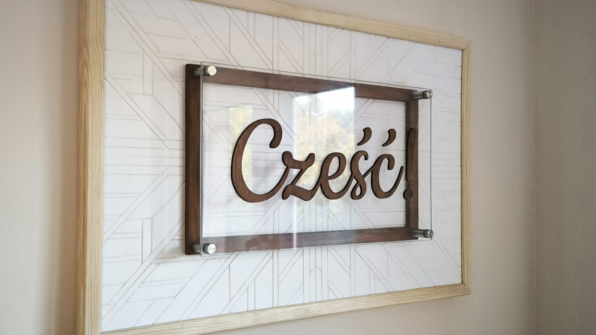

Produkty
0—
Realizacje
0—
Podstrony i menu
0—
Wiadomości
0—
Edytuj na żywo bezpośrednio na stronie
Otwórz dowolną stronę z włączonym trybem edycji — kliknij w każdy nagłówek, akapit, przycisk, zdjęcie, sekcję, kartę produktu lub realizacji.
Szybkie skróty
1. Sekcja powitalna (Hero)
Teksty, przycisk i główne zdjęcie na górze strony głównej.

Trzy atuty pod przyciskiem
2. Sekcja produktów („Wybrane dla Ciebie”)
Kolejność produktów na stronie głównej, liczba kart oraz odznaki (Nowość, Bestseller, Okolicznościowy).
Kolejność produktów na stronie głównej
3. Pasek zaufania (dolny pasek 5 kafelków)
Edytuj wszystkie 5 kafelków na dole strony głównej (w tym złoty kafel „Tworzymy z sercem”).
4. Dodatkowe bloki na stronie głównej
Dodaj własne sekcje informacyjne, promocje sezonowe lub banery pod paskiem zaufania.
Produkty w katalogu
Dotknij produktu, żeby zmienić nazwę, cenę, tagi, opis, cechy, galerię zdjęć lub widoczność w sklepie.
Nasze realizacje
Zarządzaj wszystkimi wpisami realizacji: zmieniaj kolejność, ukrywaj lub pokazuj na stronie, dodawaj zdjęcia albo zamień realizację w produkt sklepu.
Menu główne strony
Kolejność, nazwy i adresy pozycji w górnej nawigacji całego serwisu.
Edycja podstron serwisu
Wybierz podstronę, aby edytować każdy jej nagłówek, akapit, przycisk, zdjęcie, sekcję lub pytania FAQ.
Własne podstrony
Twórz nowe podstrony z pełnym formatowaniem tekstu, zdjęciami i przyciskami (dostępne pod adresem podstrona.html?s=…).
Wgraj nowe zdjęcie
Zdjęcie jest automatycznie zmniejszane i zapisywane w bibliotece — możesz użyć go na stronie głównej, podstronach, w produktach i realizacjach.
Wgrane zdjęcia
Zdjęcia pracowni (wbudowane)
Skrzynka wiadomości i zapytań
Wiadomości zapisane z formularza testowego na kontakt.html lub dodane ręcznie.
Dane firmy, kontakt i social media
Stopka strony
Tekst „O nas” oraz linki w kolumnie „Przydatne linki”.
Przydatne linki w stopce
Hasło dostępu do panelu
Reset i kopia bezpieczeństwa
Przywróć domyślne dane wybranej sekcji albo całego podglądu.